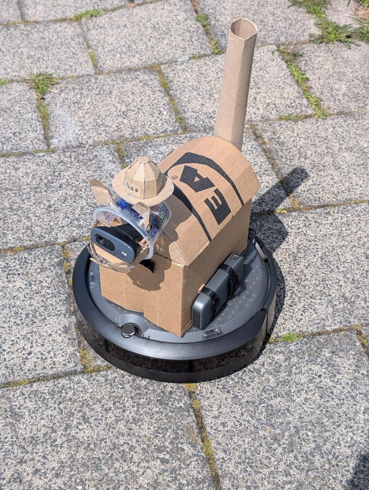
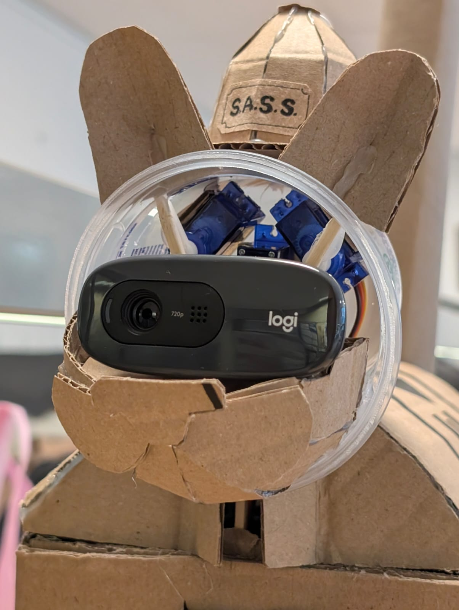
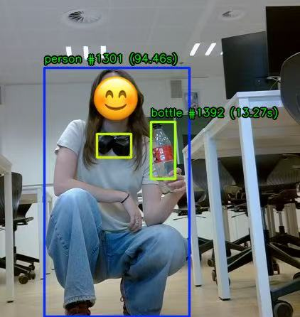
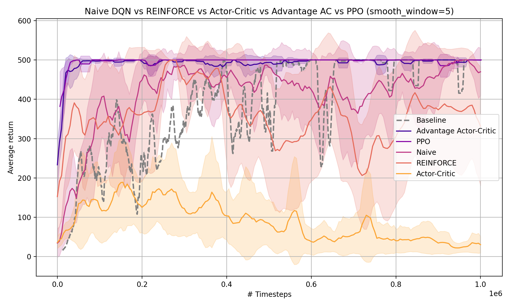
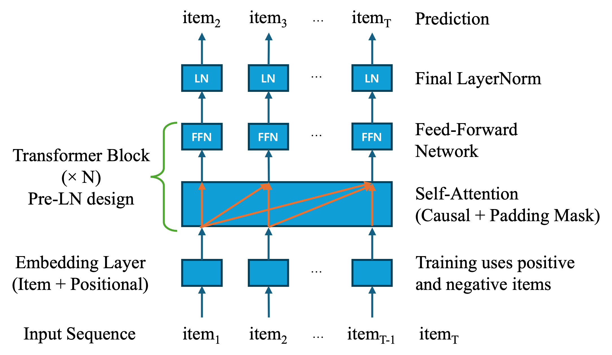

💻 Projects
SASS Robot Cat
Robotics | Computer Vision | Speech Recognition | Actuator Control | Human-Robot Interaction
- Built a ROS 2 robotic cat integrating vision, speech, navigation, and actuator control.
- Implemented person following, object search, autonomous docking, and state-based behaviors.
- Added expressive head, ear, and sound responses for interactive human-robot interaction.



Reinforcement Learning Algorithms for CartPole Problem
Reinforcement Learning | Deep Q-Network | Actor Critic | A2C | Proximal Policy Optimization
- Implemented Naive DQN, REINFORCE, AC, A2C, and PPO in CartPole environment.
- Several engineering tricks were applied to improve performance and stability, including mini-batch update, multiple epochs, generalized advantage estimation (GAE), advantage normalization and entropy regularization.
- PPO achieves the best overall performance, reaching the maximum return quickly and maintaining the most stable learning curve.
- Clipped policy updates, variance reduction, and practical implementation techniques such as GAE and mini-batch optimization are important for stable policy learning.
- The transition from value-based to policy-based to advanced policy-based methods suggests the evolution of reinforcement learning methods on providing greater flexibility and more expressive decision-making strategies.

Recommendation Challenge for Amazon Products
Recommendation System | Sequential User Behavior | SASRec | BERT4Rec | LightGCN
- Built a Top-10 Amazon product recommender for a Kaggle competition, evaluated by Recall@10.
- Compared SASRec, BERT4Rec, SASRec+, and LightGCN on temporally ordered user sequences.
- Designed a multi-stage pipeline with metadata-based candidate filtering and SASRec ranking.
- Ranked 8th/60 on the Kaggle leaderboard with the final SASRec-based recommendation system.

Evolutionary Algorithm on Black-box Problems
Genetic Algorithm | Evolutionary Strategy | Optimization | Black-box Problems
- Implemented Genetic Algorithm (GA) and self-adaptive \((\mu,\lambda)\) Evolution Strategy (ES) from scratch for discrete and continuous optimization.
- Applied GA to LABS and N-Queens (Doerr et al. 2018; Wang et al. 2022; Nobel et al. 2021), and ES with log-normal step-size adaptation to the Katsuura problem.
- Designed a budget-aware, step-wise hyperparameter tuning strategy to efficiently identify promising configurations.
- Evaluated convergence and robustness using EAF, ECDF, and Expected Runtime (ERT) across multiple runs.
References
Doerr, Carola, Hao Wang, Furong Ye, Sander van Rijn, and Thomas Bäck. 2018. “IOHprofiler: A Benchmarking and Profiling Tool for Iterative Optimization Heuristics.” arXiv e-Prints:1810.05281, October. https://arxiv.org/abs/1810.05281.
Nobel, Jacob de, Furong Ye, Diederick Vermetten, Hao Wang, Carola Doerr, and Thomas Bäck. 2021. “IOHexperimenter: Benchmarking Platform for Iterative Optimization Heuristics.” arXiv e-Prints:2111.04077, November. https://arxiv.org/abs/2111.04077.
Wang, Hao, Diederick Vermetten, Furong Ye, Carola Doerr, and Thomas Bäck. 2022. “IOHanalyzer: Detailed Performance Analyses for Iterative Optimization Heuristics.” ACM Transactions on Evolutionary Learning and Optimization 2 (1). https://doi.org/10.1145/3510426.